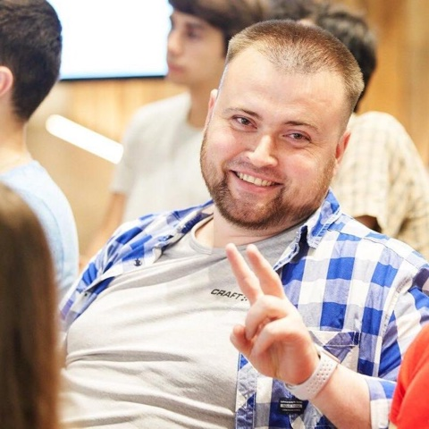
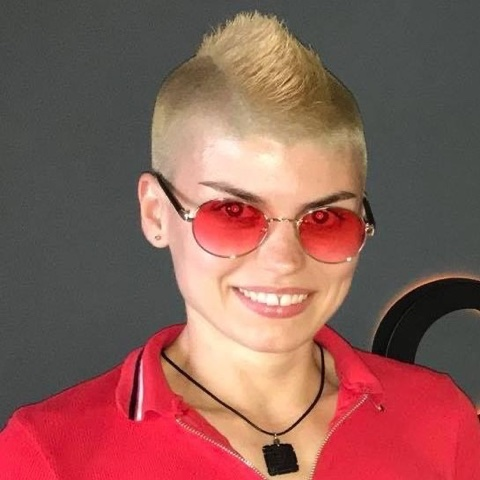

A new hire gets a contract, a budget, a badge and a manager. An AI agent usually gets an admin key and a prayer. We build the open-source stack that closes that gap: seven services that meter, police, remember, identify, audit and rehearse your agents at runtime, proven on real infrastructure before anyone saw a slide about it.
Every service has its own room: what it does, how it behaves over a live time window, and where it sits in the wiring. Nine of these doors open on their own. TokenFuse Pocket is built the same way, but it needs a Genaryx relay to point at, and Genaryx is the enterprise room the corridor ends in. Walk it with the arrows on each page, scroll this rail sideways, or hit ⌘K and type two letters.
Every request carries an Agent Passport. Money and policy sit in the request path; memory, identity, crypto, quality and rehearsal watch the same NDJSON event stream off-path. Nothing here is a dashboard after the fact: the gateway enforces in-line, in seconds.
Before this site existed, the stack ran on disposable boxes across Hetzner, AWS and GCP with a real Anthropic key: four physical machines holding one budget over a real network, a partition with no split-brain, and a kill switch cutting real spend. Live testing found real bugs; every one was fixed and re-verified before launch. The bug ledger is public in each repo's VALIDATION.md.
You do not have to take our word for it: run the stack's live services locally in one command and watch the money plane light up. The four that are not servers, Engram, Qryx, Verdryx and Mockryx, each carry a one-line try-it on their own page.
“Your AI agents are employees. You just forgot to onboard them.” Tania Fedirko, Principal FinOps Architect, on why this stack exists
IT-RAT is a small cloud practice: Zero Trust and IAM architecture, FinOps that survives an auditor, and AI adoption that doesn't end up on the front page for the wrong reason. The stack on this site is how we work in the open; if we ever take an engagement together, this is roughly what it looks like.
| Week 0 | A short, honest call. If we're not the right fit, we say so and point you somewhere better. |
| Weeks 1-2 | Assessment on your real estate: identities, spend paths, agent surfaces. No slideware. |
| Weeks 3+ | Architecture and hands-on build with your team. We leave runbooks, not lock-in. |
| Always | Everything reproducible, everything explainable to an auditor. |
IT-RAT is built and run by two people who spend their working lives in exactly the two rooms this stack lives in: cloud security and cloud money.

IAM solutions architect and cloud security consultant: Zero Trust, identity, DevSecOps and platform resilience across AWS and GCP. The stack's view that an agent deserves a badge, a budget and a boundary comes straight from this desk.

FinOps expert in cloud financial governance, cost optimization and multi-cloud strategy. Tania aligns engineering, finance and business, and applies FinOps practice to LLM APIs and token-based usage: the reason this stack meters money before it meters anything else.